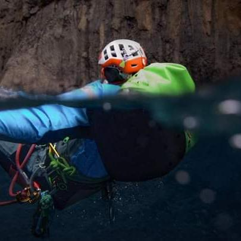

Organisation et outils métiers.
Une partie de mon travail a toujours consisté à améliorer ce qui se passe en coulisses : le suivi des dossiers, les plannings, les contrôles, la répartition des tâches. J'ai conçu plusieurs outils pour que ces changements soient utilisables par toute l'équipe.
Après quatorze ans en magasin, dont une expérience de responsable, je souhaite travailler principalement sur ces sujets, dans une fonction de coordination ou de projet métier.
- Coordination opérationnelle
- Organisation et méthodes
- Projets d'outils métiers
- Trois outils que mon équipe utilise chaque jour.
- Des procédures d'atelier reprises après mon départ.
- Une expérience de recrutement, de formation et de responsabilité de magasin.
Mon parcours en quelques mots
Comprendre précisément pourquoi une tâche prend trop de temps ou pourquoi une organisation ne fonctionne pas comme prévu. Ensuite, chercher une solution qui reste simple à utiliser.
Je veux quitter la relation client directe et travailler davantage avec les équipes et les responsables sur leur organisation et leurs outils. Je suis ouvert à d'autres secteurs que l'optique.
Expériences
2025 – aujourd'huiKrysOpticien collaborateur
En parallèle de mon activité de vente, je continue à travailler sur le suivi des dossiers et les tâches de back-office.
- J'ai repris le suivi des devis et Brief'Maker, conçus dans mon poste précédent. Les relances et les tâches apparaissent maintenant dans le même brief quotidien.
- J'ai ajouté un contrôle entre le suivi des dossiers et le logiciel métier. Il permet de repérer les devis qui ne figurent pas dans notre tableau.
- J'ai réorganisé plusieurs pratiques de back-office avec l'équipe et conçu le Hub Outils Opticien, utilisé pour la caisse, les documents et certains calculs.
Le suivi, le brief et le hub sont aujourd'hui utilisés chaque jour par mes collègues.
2024 – 2025Générale d'OptiqueResponsable de magasin
+83 % de CA · janvier 2025
J'ai repris la responsabilité d'un magasin dont l'activité était en difficulté. Il fallait recruter, revoir les plannings et relancer le commerce.
- J'ai recruté et formé deux collaborateurs, revu les horaires et réparti différemment les tâches de l'équipe.
- J'ai mis en place un brief quotidien, un suivi partagé des devis et des procédures pour les commandes et les retards.
- J'ai travaillé sur le référencement local et les actions commerciales, et conçu Opti'Profit pour mieux comparer les marges pendant la vente.
Janvier 2025 : 30 800 € de CA, soit +83 %Par rapport à la moyenne de 13 observations mensuelles antérieures figurant dans mon tableau de suivi. Plusieurs actions commerciales et organisationnelles ont été menées sur la période.
Le brief et le suivi des devis créés à ce poste ont ensuite été repris chez Krys.
2012 – 2023GrandOptical · Krys · LissacOpticien collaborateur · atelier et travail technique
J'ai notamment travaillé à Saint-Jean-de-Védas, dans un atelier qui prenait en charge des montages complexes pour un groupe de 14 magasins.
- J'ai organisé le travail de l'atelier et du back-office, ainsi que les stocks et les commandes.
- J'ai rédigé des procédures de montage, des consignes de commande et une charte qualité en vue d'un atelier centralisé.
- J'ai formé des collègues aux montages complexes et à l'utilisation d'un vocabulaire technique commun.
Environ un an après mon départ, mon ancienne directrice m'a dit que les procédures étaient toujours utilisées.
Outils
01Suivi des devis & tiers payantGoogle Sheets · suivi collectif
Utilisé en magasin
Le tableau rassemble les devis en cours, leurs statuts, les éventuels blocages et la date de la prochaine relance. Chaque dossier a un collaborateur responsable.
J'ai créé ce suivi chez Générale d'Optique, puis je l'ai réutilisé chez Krys. Il est devenu la base fonctionnelle de PANUM.
02Brief'MakerOrganisation de la journée
Utilisé en magasin
Chaque matin, le brief reprend le planning, les rendez-vous, les dossiers à suivre et les tâches à répartir. L'équipe dispose d'un document commun au lieu de consulter plusieurs fichiers.
Brief'Maker a été conçu chez Générale d'Optique. Je l'utilise aujourd'hui chez Krys.
03Hub Outils OpticienApplication web · tâches courantes
Utilisé en magasin
J'ai rassemblé dans une application les documents pour les médecins, la clôture de caisse et plusieurs calculs optiques. Les coordonnées du magasin sont saisies une seule fois.
Le hub est utilisé quotidiennement par mes collègues.
04Opti'ProfitComparaison des produits et des marges
Utilisé puis transmis
Pendant une vente, l'outil sélectionne les produits compatibles avec la demande et le budget du client, puis les classe par marge. Le prix final reste visible.
Je l'ai utilisé chez Générale d'Optique. Le directeur régional m'a ensuite demandé de le lui transmettre.
05Gestionnaire de planningPlannings et répartition de la charge
Réutilisé après mon départ
J'ai revu les règles de planning à partir des horaires d'ouverture et de la fréquentation attendue du magasin, puis créé un outil pour les appliquer.
Un collaborateur a continué à l'utiliser après mon départ.
Compétences
01Organisation du travailPlannings, procédures, répartition des tâches
J'ai travaillé sur les plannings, le traitement des commandes, les tâches de back-office et le fonctionnement d'un atelier. Je sais aussi mettre ces règles par écrit pour que d'autres puissent les appliquer.
02Suivi & analyseDossiers, indicateurs, contrôles
Je travaille avec des tableaux de suivi, des indicateurs commerciaux et des contrôles entre sources différentes. Cela m'aide à repérer les dossiers oubliés et à comprendre où se situent les difficultés.
03Conception d'outils métiersGoogle Sheets, Apps Script, applications web
Je pars des tâches que les utilisateurs ont réellement à effectuer. J'ai créé plusieurs outils dans Google Sheets et Apps Script, puis des applications web avec l'aide d'agents IA.
04Formation & transmissionRecrutement, formation technique, méthodes
J'ai recruté et formé des collaborateurs en magasin, préparé des formations d'atelier et accompagné des changements dans la façon de travailler.
05Travail avec les agents IAInvestigation, arbitrage et validation
Je leur confie la recherche, l'audit et l'exécution technique. Je cherche à comprendre les propositions, je décide des changements et je demande les vérifications nécessaires. C'est ainsi que je pilote mes projets logiciels aujourd'hui.
Projets
01PANUMApplication de suivi commercial
Projet en développement
PANUM est l'évolution du suivi des devis que j'avais créé dans Google Sheets. Le tableur fonctionnait pour une équipe, mais je voulais pouvoir gérer plusieurs magasins et leurs différents niveaux de responsabilité.
Je définis les règles métier, les priorités et les évolutions du produit. Je pilote ensuite le travail des agents IA, des vérifications jusqu'aux corrections.
L'application n'a pas encore fait l'objet d'une validation pilote en conditions réelles.
02Projets de développement avec l'IAARCLINE · SECURIX · UXER · GUARDIAN
Projets personnels
En développant PANUM et d'autres applications, j'ai dû me former aux questions de déploiement, d'infrastructure, de sécurité et de maintenance.
J'ai aussi créé des outils pour mieux organiser le travail des agents IA :
- ARCLINE : découper les missions et suivre leur exécution.
- SECURIX : contrôler la sécurité et conserver les preuves des vérifications.
- UXER : aider à analyser et vérifier les interfaces.
- GUARDIAN : protéger les secrets sans compliquer le travail des agents.
Ces projets sont personnels et évoluent avec mes besoins. Ils montrent surtout comment j'organise le travail technique avec l'IA.
03L'OrtabelsOutil pour mon projet maraîcher
Application en ligne
Je développe un outil pour organiser les cultures de mon potager. Il utilise notamment les températures locales et les degrés-jours pour estimer les périodes de semis et de récolte.
04Renta MenuCalcul des coûts et de la rentabilité en restauration
J'ai conçu un outil qui rapproche les coûts matières, les prix de vente, les charges de personnel et le nombre de couverts prévu, pour évaluer la rentabilité d'un menu.
Formation
2012BTS Opticien-LunetierFormation initiale
En parallèle de mon métier, je me suis formé à Google Sheets, Apps Script, l'automatisation et au développement de projets web.
J'apprends surtout en essayant, en cherchant de la documentation, en posant des questions et en reprenant ce qui ne fonctionne pas.